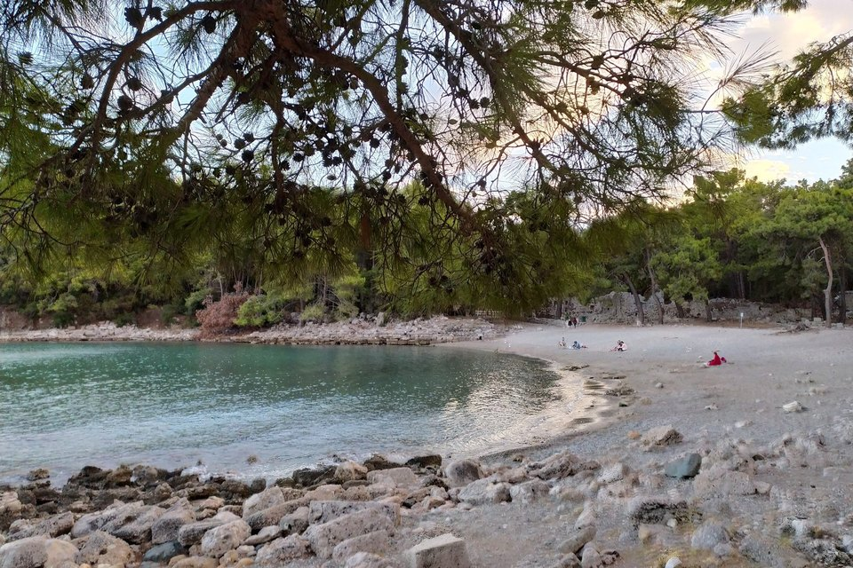

Turkey · Tekirova
Phaselis audio guide
7 stops · 9 min · offline · plays as you arrive
The guide price is €1.99. This button is a placeholder. It does not open checkout and does not take payment. Email hello@getearwise.com.
A 7-stop offline audio guide to Phaselis in Tekirova, recorded in 10 languages and designed to play as you arrive. It covers the pine-shaded Roman aqueduct, three ancient harbours, and main paved avenue. Download once; you will not need a signal on the ground.
Stops
- 1
The aqueduct
Near the aqueduct. The coordinate is an approximate feature reference; choose a permitted viewing position beside the ruins. This is stop 1 on the route.
Free sample: stop 1
Play0:00 / –:––Read along
Play: manual
The aqueduct brought water into Phaselis for its baths, fountains and other public buildings. Before it was built, the settlement relied on cisterns and nearby water sources.
The Roman builders set stone arches on piers faced with carefully cut blocks and filled with rubble and mortar. Above the arches, a rubble-stone wall carried the water pipes. Two clay pipes lay at different heights, possibly used at different times. Keeping the waterway high preserved the gradient and the pressure needed to distribute the water.
The aqueduct was built in the second century AD, when the city’s population and its demand for water were growing. It was repaired in later periods. In twenty twenty-three, excavators recorded seventeen of its piers preserved on land between the Central Harbour and the lagoon.
Water came from sources outside the city, including springs on the slopes of Tahtalı Mountain. Inside Phaselis, pipes supplied a public fountain beside the Tetragonal Agora, as well as the baths and latrine. The aqueduct also passed through the northern cemetery, where it was integrated with tomb structures.
Further north, near the entrance to the North Harbour, stood a bath building known as the Necropolis Bath. It lay just behind monumental tombs at the southern entrance to the northeastern cemetery. It was built to a cloverleaf plan, with rounded apses, and a marble-floored area is thought to have been its pool. Many pieces of coloured window glass, mostly turquoise blue and pistachio green, were found near its apses and windows. In later periods, the building stopped being used as a bath.
- 2
The main street and the three harbours
At the northern end of the main street, near the Central Harbour. The coordinate is an approximate street reference, not a surveyed standing position. This is stop 2 on the route.
Script and audio included when you buy - 3
The great baths
Near the Great Bath, on the main-street side. The coordinate is a feature-level reference; do not enter closed ruins. This is stop 3 on the route.
Script and audio included when you buy - 4
The small baths and the latrine
Near the Small Bath and latrine. The shared street coordinate is an approximate site reference; choose a permitted viewing position. This is stop 4 on the route.
Script and audio included when you buy - 5
The theatre
At a permitted theatre viewing position near the city square. The shared street reference is outside the mapped theatre, not an entrance or an instruction to climb. This is stop 5 on the route.
Script and audio included when you buy - 6
The agoras
Near the Domitian Agora on the main street. The coordinate is an approximate feature reference, not permission to enter the enclosure. This is stop 6 on the route.
Script and audio included when you buy - 7
Hadrian's Gate
Near the southern gateway and harbour. The coordinate is an approximate feature reference; use a permitted viewing position. This is stop 7 on the route.
Script and audio included when you buy
On the map
All 7 stop pins for this guide are marked. Open map